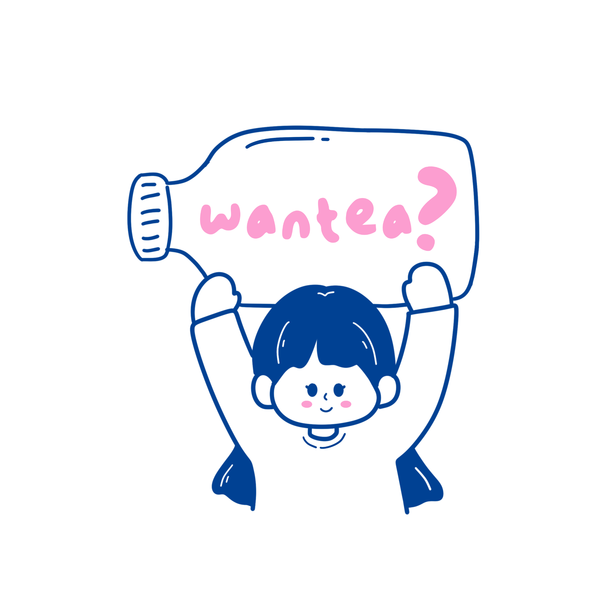

SIP.
A good cup can change the direction of an ordinary day — sesimpel itu.
Teh for people who have questions. A little playful, a little strange — very Jakarta.
MEET THE TEA / KENALAN SAMA TEH →
Jakarta moves fast. We like our tea with the same energy — cepat, dingin, curious.
Wantea is a tea brand built around curiosity, conversation, and that small joy when a drink just feels like yours.
A good cup can change the direction of an ordinary day — sesimpel itu.
Mix it. Match it. Bikin it yours.
Good tea deserves good company — atau a very good story.
SEBENARNYA, TEA ITU APA?
An upcoming interactive learning experience with tea — tempat questions become part of the cup.
Masuk Bait →